|
PCART
|
Repair and validate API parameter compatibility issues
More...
Functions | |
| def | findName (pos, dic) |
| Find parameter name by its position 通过位置查找参数名 More... | |
| def | fix (callAPI, repairDict, node, starFlag, twoStarFlag) |
| Perform parameter repair operations through AST 通过AST执行参数修复操作 More... | |
| def | mapName (name, dic) |
| Get repair operation dictionary of keyword parameter 获取关键字参数的修复操作字典 More... | |
| def | mapPos (pos, dic) |
| Get repair operation dictionary of positional parameter 获取位置参数的修复操作字典 More... | |
| def | mirrorAPI (fixedAPI, dic) |
| Create mirror for the fixed API by adding all parameter names 给修复后API的参数填上参数名 More... | |
| def | repairTask (root, callAPI, apiWithValue, projName, runPath, runCommand, repairLst, virtualEnv, errLst) |
| Task of repairing parameter compatibility issues 参数兼容性问题修复任务 More... | |
| def | validateByRun (callAPI, apiWithValue, projName, virtualEnv, runPath, runCommand) |
| Dynamic validation 动态验证 More... | |
| def | validateByStr (fixedAPI, repairDict, targetAPIDefinition, starFlag, twoStarFlag) |
| Static validation 静态验证 More... | |
Repair and validate API parameter compatibility issues
More details (TODO)
| def repair.findName | ( | pos, | |
| dic | |||
| ) |
Find parameter name by its position 通过位置查找参数名
| pos | Parameter position |
| dic | Repair operation dictionary |
Definition at line 61 of file repair.py.
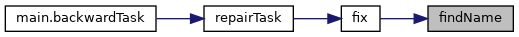
| def repair.fix | ( | callAPI, | |
| repairDict, | |||
| node, | |||
| starFlag, | |||
| twoStarFlag | |||
| ) |
Perform parameter repair operations through AST 通过AST执行参数修复操作
| callAPI | The API call |
| repairDict | Repair operation dictionary |
| node | The AST node of the API call |
| starFlag | Flag of * |
| twoStarFlag | Flag of ** |
Definition at line 135 of file repair.py.
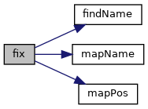
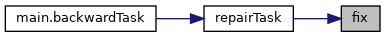
| def repair.mapName | ( | name, | |
| dic | |||
| ) |
Get repair operation dictionary of keyword parameter 获取关键字参数的修复操作字典
Here, keyword parameter means that the parameter is passed by parameter name 此处，关键字参数指带参数名进行传递的参数
| name | Parameter name |
| dic | Repair opeartion dictionary @ruturn dic[key] The repair operation |
Definition at line 47 of file repair.py.
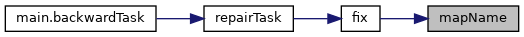
| def repair.mapPos | ( | pos, | |
| dic | |||
| ) |
Get repair operation dictionary of positional parameter 获取位置参数的修复操作字典
Here, positonal parameter means that the parameter is passed by position without parameter name 此处，位置参数指按位置而不带参数名进行传递的参数
| pos | Parameter position |
| dic | Repair operation dictionary @ruturn dic[key] The repair operation |
Definition at line 27 of file repair.py.
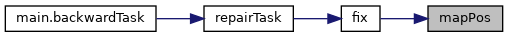
| def repair.mirrorAPI | ( | fixedAPI, | |
| dic | |||
| ) |
Create mirror for the fixed API by adding all parameter names 给修复后API的参数填上参数名
| fixedAPI | Fixed API |
| dic | Repair operation dictionary |
Definition at line 76 of file repair.py.
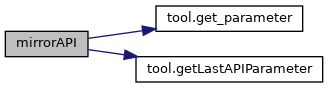
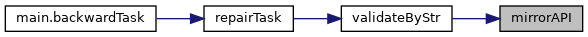
| def repair.repairTask | ( | root, | |
| callAPI, | |||
| apiWithValue, | |||
| projName, | |||
| runPath, | |||
| runCommand, | |||
| repairLst, | |||
| virtualEnv, | |||
| errLst | |||
| ) |
Task of repairing parameter compatibility issues 参数兼容性问题修复任务
需要判断一下apiWithValue是否为空 修复成功=形式上修复成功+成功运行 是否兼容 问题是修完之后，无法通过返回值来判断，到底是动态修复成功了还是只经过了静态验证,再返回一个标签？ 函数返回3个值：修复结果，形式上的兼容性，是否修复成功
| root | The AST root of the source file |
| callAPI | The API call |
| apiWithValue | The API call with valued added by loading the pkl file |
| projName | The project name |
| runPath | The relative path of the run file |
| runCommand | The run command of the project |
| repairLst | List of repair operation dictionary |
| virtualEnv | The virtual environment of the target lib version |
| errLst | List of error messages |
Definition at line 370 of file repair.py.
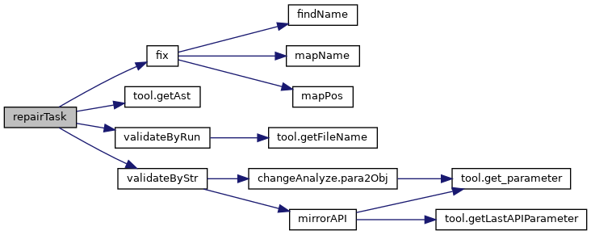
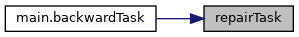
| def repair.validateByRun | ( | callAPI, | |
| apiWithValue, | |||
| projName, | |||
| virtualEnv, | |||
| runPath, | |||
| runCommand | |||
| ) |
Dynamic validation 动态验证
| callAPI | The API call |
| apiWithValue | The API call with valued added by loading the pkl file |
| projName | The project name |
| virtualEnv | The virtual environment of the target lib version |
| runPath | The relative path of the run file |
| runCommand | The run command of the project |
Definition at line 269 of file repair.py.
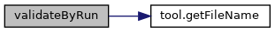
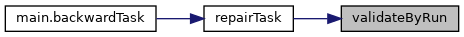
| def repair.validateByStr | ( | fixedAPI, | |
| repairDict, | |||
| targetAPIDefinition, | |||
| starFlag, | |||
| twoStarFlag | |||
| ) |
Static validation 静态验证
| fixedAPI | The fixed API |
| repairDict | Repair operation dictionary |
| targetAPIDefinition | API definition of target lib version |
| starFlag | Flag of * |
| twoStarFlag | Flag of ** |
Definition at line 323 of file repair.py.
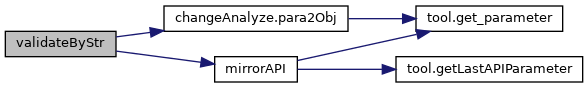
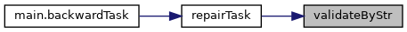